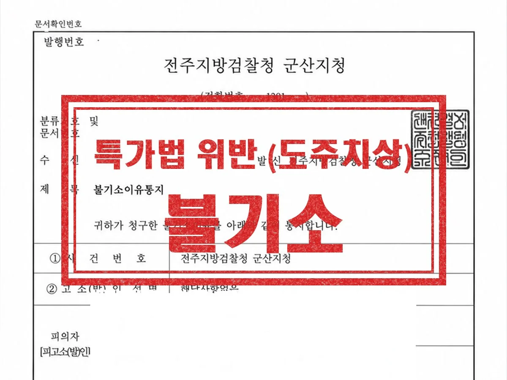
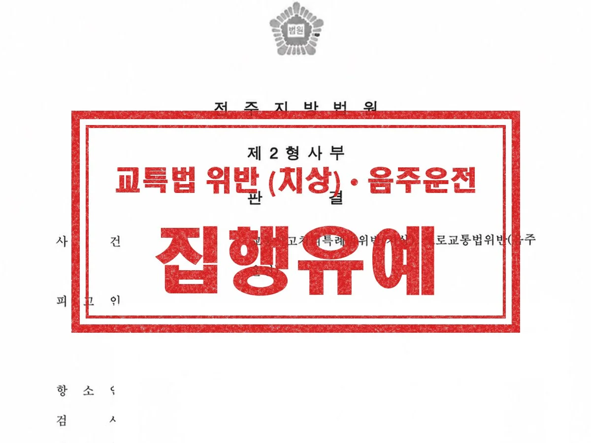
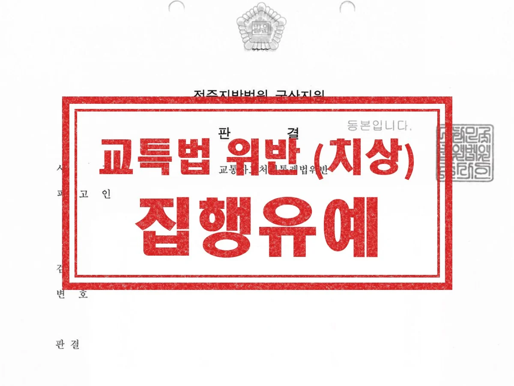

형사 · 군형사
특가법 위반 (도주치상)
교통사고 뒤 정체를 피하려 사고 지점에서 떨어진 곳에 차를 세우고 현장으로 돌아왔는데, 특가법 위반(도주치상)으로 송치된 사안입니다. 변호인 의견서로 구체적인 사실관계를 정리하고, 도주의 고의가 없었던 점을 적극 변소했습니다.
결과 공소청 불기소
DUI & Traffic
Overview
음주운전과 교통사고는 형사처벌과 운전면허 행정처분이 동시에 진행됩니다. 생계에 운전이 필요한 분이라면 형사 사건만큼 면허 처분 대응도 중요하므로, 단속 직후부터 두 절차를 함께 살펴야 합니다.
음주운전으로 단속됐다
조사 일정 확인, 진술 준비, 양형자료 정리
음주 상태로 사고가 났다
피해자 합의, 교특법·위험운전치상 대응
사고 후 현장을 떠났다
도주치상·사고후미조치 여부 검토와 대응
면허가 취소됐다
이의신청·행정심판 검토, 생계형 사정 소명
음주운전 재범이다
가중처벌 대응, 재범 방지 노력 자료 준비
운전 중 폭행 시비가 생겼다
운전자폭행(특가법) 해당 여부 검토
Process
01
측정 수치, 운전 거리, 사고 경위와 피해 정도를 확인합니다.
02
진술 방향을 정하고 필요하면 조사에 동행합니다.
03
피해자 합의와 재범 방지 자료, 탄원서 등을 준비합니다.
04
검찰 처분과 재판, 면허 이의신청·행정심판을 함께 진행합니다.
Results

교통사고 뒤 정체를 피하려 사고 지점에서 떨어진 곳에 차를 세우고 현장으로 돌아왔는데, 특가법 위반(도주치상)으로 송치된 사안입니다. 변호인 의견서로 구체적인 사실관계를 정리하고, 도주의 고의가 없었던 점을 적극 변소했습니다.
결과 공소청 불기소

음주운전으로 교통사고를 내 피해자가 중상해를 입었고, 1심에서 징역형이 선고된 사안입니다. 항소심에서 피해자와 신속하게 합의를 진행하고 양형사유를 적극 변소하여 원심판결을 파기받았고, 의뢰인은 석방되었습니다.
결과 법원 집행유예

교통사고로 피해자가 전치 12주의 중상해를 입은 사안입니다. 피해자가 치료에 전념할 수 있도록 원만하고 신속하게 합의를 진행했고, 양형사유를 적극 변소했습니다.
결과 법원 집행유예
Columns
가해자는 첫 진술 전, 피해자는 진단 후 합의 전. 12개 예외·중상해, 손해배상 구성, 가벼운 사고 처리까지.
전화를 놓쳤을 때, 조사 당일 8단계, 진술 요령, 조서 확인, 임시운전증명서 40일, 반성문 시기까지.
수치를 다툴 수 있는 사건, 벌금과 정식재판의 경계, 생계형 운전자의 면허 행정심판까지.
두 죄의 법정형 차이, '정상적인 운전이 곤란한 상태'의 판단 자료, 처방약과 약물운전, 다툴 수 있는 지점까지.
분야를 정해서 연락 주실 필요 없습니다. 무슨 일이 있었는지만 말씀해 주시면 어떤 절차로 가는 사건인지 정리해 드립니다.